Ravning
Hölzernes Brückenbauwerk


Gesamtansicht von Norden


Gesamtansicht von Süden


80 - Ravning - Letztes Update 05.10.2025
| Navidaten: 55.67498 9.34732 oder: Ravningvej 25, 7182 Bredsten |

Dies ist ein hochauflösendes Luftfoto vom 02.04.2023 von Skråfoto, das den Verlauf der Ravning Brücke in der Landschaft zeigt. Durch 2 x Mausklick erreicht man eine vielfach vergrößerte Ansicht. Skråfoto ist eine Webanwendung, die von Klimadatastyrelsen weltweit kostenlos bereitgestellt wird - Freie Nutzung unter Beachtung der Lizenz: CC BY 4.0. Die Aufnahmen werden alle zwei Jahre erneuert und neben einer Senkrechtaufnahme wird ein Schrägbild aus jeder Himmelsrichtung angeboten, das man über eine Adresssuche aufrufen kann.
Am Dienstag, 20.08.2013, konnte ich die Neubauten der beiden Brückenfach-Rekonstruktionen am südlichen und nördlichen Ende des ehemaligen Brückenverlaufs über das Vejle Bachtal erstmals aufsuchen und fotografieren. Diese wurden nach meinen Recherchen im Spätjahr 2011 errichtet. Gegenüber den vormaligen Rekonstruktionen haben sich die Dimensionen verändert, die sich auf neuere Ausgrabungen / Untersuchungen stützen. Die Fotos dazu finden sich links.
Infos zur Ravning Brücke in dänisch / englisch gibt es hier auf den Webseiten der Vejle Museen.
Ein mehrsprachiger, umfassender Flyer kann hier abgerufen werden. Einen weiteren Flyer aus 2009 gab es auch in deutscher Sprache, den ich aber im Internet aktuell nicht mehr aufstöbern kann. Deshalb habe ich meinen damaligen Download hier verlinkt.
Am Dienstag, 23.08.2016, war ich auch vor Ort und habe dazu diese Fotos aufgenommen:
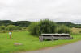 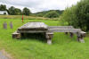 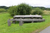 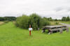 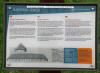 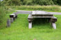 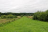 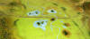


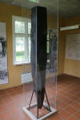 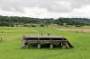 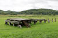 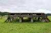 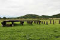 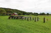 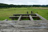 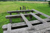


Nun kam ich im Rahmen meiner 2022er Jütland Wikingertour am Samstag, 18.06.2022, erneut vorbei.Dabei habe ich diese Fotos gemacht.
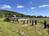 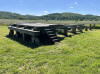 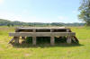 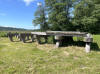 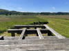 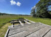 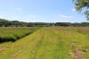 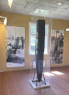


Davor war ich laut meiner Unterlagen auch schon am Mittwoch, 15.08.1990 / Mittwoch, 07.08.1991 / Donnerstag, 15.08.1996 / Samstag, 06.05.2000 / Freitag, 14.08.2009 vor Ort gewesen.
Eines der imponierendsten Bauwerke der Wikingerzeit ist die Brücke über das Vejle Bachtal, zwischen Ravning und Vork, ca.10 km südwestlich von Jelling.
Im Jahre 1953 wurde die Wiese im Ravningtal dräniert und der dort verlaufende Vejle Bach reguliert. Dabei kamen einige große Eichenpfosten auf der Südseite des Bachtals bei Vork zum Vorschein. Sie waren regelmäßig quadratisch zugehauen und standen offenbar nach einem besonderen Muster im Erdreich. Bei weiteren Arbeiten in diesem Bereich im Jahre 1956 fand man nochmals ähnliche Eichenpfosten in der Erde.
Ein archäologisch interessierter Arzt, K. V. Christensen (*20.09.1897 - 07.08.1966) aus Ødsted, der sich mit der Angelegenheit befasst und Messungen durchgeführt hatte, veröffentlichte seine Forschungsergebnisse, wonach es sich um eine Brücke handeln müsse, in den Vejle Amts historiske Årbøger von 1959. Seine Thesen fanden dadurch Unterstützung, dass auch auf der nördlichen Seite des Bachtales zwischenzeitlich entsprechende quadratisch zugehauene Pfosten in der gleichen regelmäßigen Formation gefunden worden waren.
Dank eines weiteren archäologisch
interessierten Bürgers, dem Grundbesitzer Jens Lund Olsen, wurde nun endlich
das
Nationalmuseum
in
Kopenhagen auf
die Sache aufmerksam. Zunächst wurden einige C-14-Kohlenstoff-Analysen von
einem der bereits gefundenen Eichenpfosten durchgeführt, die auf das Jahr 980
± 100 Jahre datiert werden konnten. Dabei gab es noch verschiedene
Theorien der Fachleute über den Zweck der Pfosten, wie z.B. dass sie eine
Schiffssperre oder aber den Kriegshafen von
Im Verlauf der systematischen Ausgrabungen, die im Jahre 1972 - also fast 1000 Jahre nachdem die Eichenpfosten verbaut worden waren - begannen , ergab sich dann aber zweifelsfrei, dass K. V. Christensen Recht hatte - es handelte sich um eine Brücke.
Die Landschaft in dieser Region gehört zu den wechselhaftesten in ganz Dänemark. Abhänge und tiefe Kluften mit steilen Seiten, die manchmal eine Neigung bis zu 75 Grad aufweisen, finden sich hier. Dies ist besonders auf der nördlichen Seite des Tales der Fall und verhindert einen Abgang zum Bachtal. Die dazwischen liegenden Wiesen und Moorflächen haben einen Verkehr zwischen den beiden Bachufern jahrhundertlang behindert.
Nach der Senkung des Wasserstandes im Vejle Å und der Entwässerung während des ersten und zweiten Weltkriegs sowie in den fünfziger Jahren veränderten sich die Wiesen vollkommen. Dieser Umstand hat große Bedeutung für die Erhaltung der Wikingerbrücke. Die Torfschicht, in der die Brückenpfeiler stehen, ist im Laufe der letzten Jahre zusammengesunken, an manchen Stellen 1 m und der Wasserspiegel des Vejle Å ist noch tiefer gesunken. In den siebziger Jahren befand sich hier noch eine Schicht von Planken und kleineren Stöcken, die vermutlich von der Fahrbahn der Brücke stammten, die jedoch heute leider verschwunden sind.
Die Ausgrabungen ergaben, dass eine ca. 760 m lange Brücke über das Vejle Bachtal mit großer Präzision errichtet worden war. Über die gesamte Länge weicht die Konstruktion keine 5 cm von einer geraden Linie ab. Aufgrund von späteren Umbildungen in der Landschaft - durch einen Eisenbahndamm, Forellenteiche u.a. - war es schwierig die Länge genau zu bestimmen. Die Untersuchungen ergaben auch, dass alle Brückenfächer ganz gleich waren, auch wenn es gelegentlich zu Abweichungen kam, die durch die eigentümlichen Bodenverhältnisse bedingt waren. Aufgrund der Regelmäßigkeit war es kein Problem dem weiteren Brückenverlauf zu folgen, nachdem man zunächst nur 3 Brückenfächer zu Tage gefördert hatte.
Normalerweise waren es vier tragende Pfosten je Brückenfach, das durch 2 kleinere schrägstehende Pfosten unterstützt wird. Die einzelnen Fächer sind in einem Abstand von 2,40 m und die vier senkrechten tragenden Pfosten mit einem Abstand von 1,2 m erbaut.
Die Länge der gefundenen tragenden Pfosten variiert zwischen 2 und 3 m. Wenn sich heute keine längeren Pfosten finden, liegt das daran, dass die aus der Erde ragenden Pfostenspitzen mit der Zeit verfaulten. Man kann die ursprüngliche Lage dennoch errechnen, da der Winkel zwischen den äußeren Schrägpfosten und den senkrechten tragenden Pfosten daraufhin weist, dass sie sich 1,25 m über der ehemaligen Moorfläche trafen. Hierdurch ergibt sich also eine Pfostenlänge von ehemals durchschnittlich 3,5 bis 4,5 m. Der längste tragende Pfosten war beinahe 6 m lang.
Die tragenden Pfosten sind regelmäßig, vierseitig zurechtgehauen und haben ein Kantenmaß von ca. 30 cm. Insgesamt fanden sich 138 tragende Pfosten, deren Größe zwischen 22,5 und 33,5 cm variierte. Bei 66,24 % der Pfosten war das Kantenmaß jedoch 30 cm. Dies entspricht als Maßeinheit etwa einem Fuß. Die Maßeinheit von einem Fuß passt auch zu den anderen Bauteilen; so ist der Abstand zwischen den einzelnen Brückenfächern 8 Fuß, der Abstand zwischen den tragenden Pfosten 4 Fuß und die Brückenfachbreite beträgt 16 Fuß.
Wenn sich Pfosten fanden, deren Kantenlänge nur etwa 22,5 cm aufwies, kann dies vielleicht daran liegen, dass es schwierig war geeignete Bäume mit den entsprechenden Dimensionen zu finden. Wenn der Abstand zwischen den einzelnen Pfosten und zwischen den Brückenfächern teilweise um einige Zentimeter variiert, kann dies möglicherweise an diversen technischen Schwierigkeiten oder auch an der Bodenbeschaffenheit liegen. Ein Beispiel hierfür ist ein tragender Pfosten, der in einen Baumstamm gerammt wurde, der tiefer im Moor lag. Dies waren unvorhergesehene Probleme für den Ingenieur wie für den Landvermesser, und dass Landvermesser bei diesem Projekt beteiligt waren, bezeugen die "Landvermesserstöcke" die dort eingesteckt worden waren, wo die Pfosten angebracht werden sollten. Man hat das Gesamtprojekt offenbar zunächst abgesteckt und sich dann nach und nach vorwärts gearbeitet. Viele dieser langen, geraden Haselstöcke fanden sich dicht neben den Brückenpfosten in der Erde.
Die Brücke bestand aus ca. 280 Fächern mit je 4 tragenden Pfosten, also insgesamt ca. 1120 Pfosten aus entsprechend vielen Eichenstämmen. Dazu kommen die ca. 660 Seitenpfosten, die in vielen Fällen aus den Ästen der bereits gefällten Bäume zurechtgehauen werden konnten. Ein zusätzlicher Holzschlag war dafür kaum erforderlich.
Aufgrund der festgestellten Ausmaße wurden mindestens 3600 m² für die Fahrbahn benötigt. Sie bestand zunächst aus querverlaufenden Balken über jedes Brückenfach. Über diesen lag eine unbekannte Anzahl längsverlaufender Balken und über diesen wiederum eine unbekannte Anzahl querverlaufender Balken - die eigentliche Fahrbahn. Aufgrund der Konstruktionsdetails ergab sich, dass der Überbau wie bei slawischen Brücken gewesen sein muss.
Die Fahrbahn lag knapp 1 m über der heutigen Oberfläche, war ca. 4,5 m breit und ihre Tragfähigkeit errechnet sich nach einer ingenieurmäßigen Untersuchung der Bodenverhältnisse und der Pfostendimensionen auf ca. 5 Tonnen. Die Tragfähigkeit liegt damit sehr hoch und es erhebt sich die Frage mit welchen Transportfahrzeugen dieser Gewichtsklasse die Benutzer unterwegs waren. Hierzu muss man die Antwort schuldig bleiben. Die Brücke ist ein einzigartiges Bauwerk der Wikingerzeit, das aber offenbar überdimensioniert ist. Vielleicht liegt es nur daran, dass man eine entsprechende Sicherheit haben wollte, oder aber an der angewandten Maßeinheit, so dass die Brücke solche Ausmaße annahm.
Gegen Norden setzt sich die Brücke noch fort, teils als Hohlweg auf einem natürlichen Damm, teils als tiefer Hohlweg. Dort dürfte die Böschung niedergegraben worden sein, um damit die kräftige Steigung vom Bachtal zu der umliegenden Landschaft zu mindern.
Wie bereits erwähnt, ergab die Datierung einer der ersten ausgegrabenen Pfosten mittels der C 14-Kohlenstoff-Methode, dass die Brücke im Jahre 980 ± 100 erbaut wurde. Zusätzliche dendrochronologische Untersuchungen der Bauhölzer ergaben eine Datierung auf das Winterhalbjahr 979/980.
Alles in allem stellt das Bauwerk eine große technische Leistung dar, deren Ausführung sehr viel Holz und Arbeitskräfte erforderte. Die Brücke war ein so großes Bauwerk für die damalige Zeit, dass eine zentrale Macht der Ausführung vorangestanden haben muss. Da das Baujahr genau mit dem bei der Ausgrabung der Trelleborg ermittelten Jahr zusammenfällt, ist es natürlich, dass man die Brücke als einen Teil der militärischen Aktivitäten ansieht, zumal die Bauweise auf die großen Ringburgen weist und ihr ökonomischer und allgemeiner Nutzen begrenzt war.
Da die Ravning-Brücke keinerlei Anzeichen von Reparaturen aufweist, geht man davon aus, dass sie nur etwa 5 Jahre existiert hat (Wenn man sich die hölzernen Rekonstruktionen über die wenigen Jahre hinweg, die sie existieren ansieht, ist dies gut vorstellbar. Diese sind nämlich inzwischen relativ verwittert).
Wer der Bauherr war, der hinter dieser gewaltigen Brückenanlage steht, erklärt vielleicht der nur wenige Kilometer nördlich von Ravning entfernt stehende große Runenstein von Jelling. Hier steht: "... der Harald, der gewann ganz Dänemark ..." - also König Harald Blauzahn (*um 910 - 01.11.985/86), der von ca. 945-986 regierte.
Die bislang letzten Ausgrabungen fanden 1994 statt. Im kleinen Museum vor Ort befindet sich ein Originalpfosten, ein komplettes Brückenfach ist im neuen Museum in Jelling rekonstruiert/ausgestellt.
Die Überreste der Ravning-Brücke sind nach Abschluss der Ausgrabung wieder verdeckt worden, aber einen Eindruck der Brücke vermittelt die zwischenzeitlich an beiden Enden rekonstruierten Ausschnitte (siehe nebenstehende Bilderlinks).
Die zuständige Behörde (Skov- og Naturstyrelsen = Wald- und Naturverwaltung) hat in den Jahren 1996-97 ein aufwändiges Projekt zur Erhaltung der Brückenreste durchgeführt. Zunächst wurde das betreffende Areal erworben, eine Teichwirtschaft wurde stillgelegt, über den Bach wurde eine kleine Brücke gebaut und die ursprüngliche Brückentrasse wurde mit einem 10 m breiten und ca. ½-1 m dicken grasbekleideten Erdmantel überdeckt. Dieser sorgt für die notwendige Feuchtigkeit und verhindert damit, dass die noch erhaltenen Brückenpfosten im Boden vermodern. Die Kosten hierfür beliefen sich auf 2,6 Millionen Kronen (ca. 350.000 Euro). Zusätzlich wurde die Brücke unter Denkmalschutz gestellt.
In dem direkt neben der nördlichen Rekonstruktion befindlichen früheren Stationsgebäude der ehemaligen Vandelbahn (fuhr zwischen 10.09.1897 und 31.03.1957) ist inzwischen auch eine kleine Ausstellung eingezogen. In diesen Räumen ist die Baugeschichte der Brücke mit einigen Fundstücken und Modellen vertreten (siehe nebenstehende Bilderlinks), es wird aber auch über andere Themen der Umgebung (Siedlungen der älteren Jägersteinzeit, Vejle Å und die Mühlen, Ringburg und Opfersee, Urbarmachung der Auen usw.) berichtet.
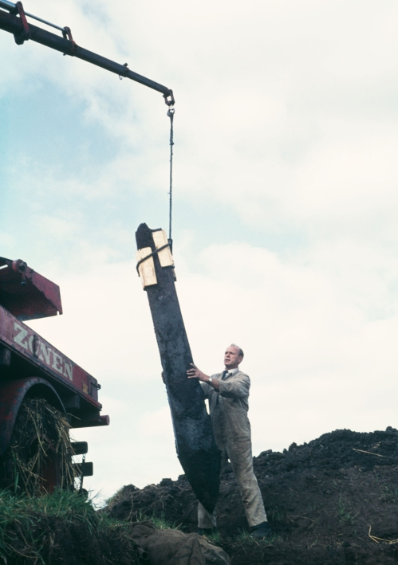
Dieses Foto (wohl bei der Ausgrabung 1972 entstanden) habe ich der Digitale Sammlung Nationalmuseum Kopenhagen entnommen - Lizenz: keine Rechte bekannt.
Der entsprechende Eintrag in "Fund og Fortidsminder" ist hier verlinkt.
Literaturhinweise:
K. V. Christensen - Middelalderbro i Vejleaadalen og Trælborg Voldsted - Vejle Amts Aarbog 1959 - S. 115-130
Thorkild Ramskou - Vikingebroen - SKALK - 1/1977 - S. 3-9
Thorkild Ramskou - Vikingetidsbroen - Nationalmuseets arbejdsmark - 1980 - S. 25-32
Mogens Schou Jørgensen - Vikingetidsbroen i Ravning Enge - nye undersøgelser - Nationalmuseets arbejdsmark - 1997 - S. 74-87
Mogens Schou Jørgensen - Den berømte bro - SKALK - 5/1998 - S. 5-11
Mogens Schou Jørgensen og Jens Tyge Møller - Landskabet som historiens scene - Ravning Enge i vikingetid og middelalder - Vejle Amts Aarbog 1999 - S. 67-82
Kjeld Christensen - Ravning-broens alder - En af Danmarks sikreste dendrokronologiske dateringer? - KUML 2003 - S. 213-226
Claudia Baittinger - Præliminær dendrokronologisk undersøgelse af træprøver fra Ravning Enge - NNU rapport nr. 14 - 2007 - S. 1-11
Claudia Baittinger - Præliminær dendrokronologisk undersøgelse af træprøver fra Ravning Enge - NNU rapport nr. 3 - 2009 - S. 1-12
Katrine Lewinsky Moestrup - Vikingetidsbroen i Ravning Enge - en kort gennemgang af broens konstruktion - Vejleegnens Museer - Efteråret 2011 - S. 4-12
Morten Axboe - Ramses i Ravning - en personlig skitse - Nationalmuseets arbejdsmark - 2015 - S. 8-22
Anne Pedersen - Broen ved Ravning Enge - Webseite zu Jellingprojektet
Interessante Webseiten:
Naturforvaltning gennem ti år - 1989-1998 - 6.2.2. Ravningbroen vikingebroen i Vejle Ådal
Neue Wikinger Brücken Rekonstruktion in Albertslund über das Store Vejleådalen - Geodaten: 55.688988, 12.319609
2017-2019 - Inspiriert von der Ravningbrücke bauten die beiden Kultureinrichtungen - Kroppedal Museum und das benachbbarte Wikingerdorf in Albertslund - gemeinsam mit Freiwilligen und Schülern den längsten rekonstruierten Straßen- und Brückenparcours der Welt aus der Wikingerzeit. Die Attraktion besteht aus dem physischen Straßen- und Brückenverlauf in der Landschaft von Store Vejleådalen zwischen Høje-Taastrup und Albertslund, der mobilen App Useeum/Vikingebro und der Ausstellung Hver dag er en kamp im Kroppedal Museum. Die im September 2019 fertiggestellte Straßen-/Brückenkomplex (Zweig- und Reisstraße, Kopfsteinpflasterstraße, Planken- und Schwellenstraße und Schlaglochstraße) hat eine Gesamtlänge von ca. 765 m, während die Holzbrücke allein ca. 140 m Länge aufweist. Am Beginn der Straße ist ein einzelnes Brückenfach aufgebaut worden, worüber sich einem die Dimensionen leichter erschließen (siehe unten hinter meinem Fahrrad/Pedelec).